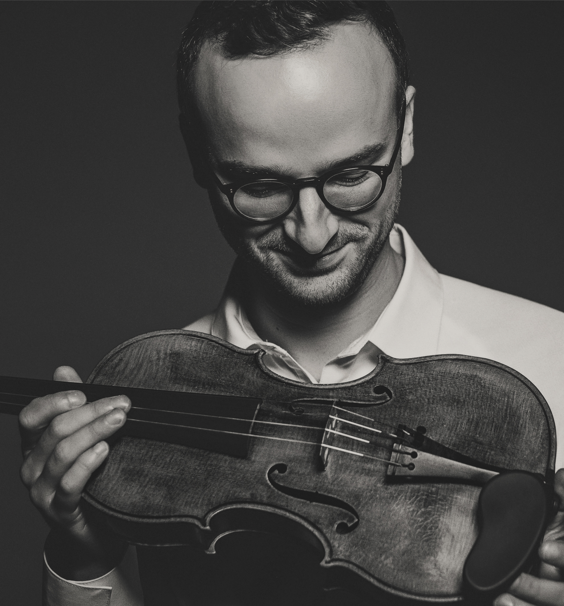
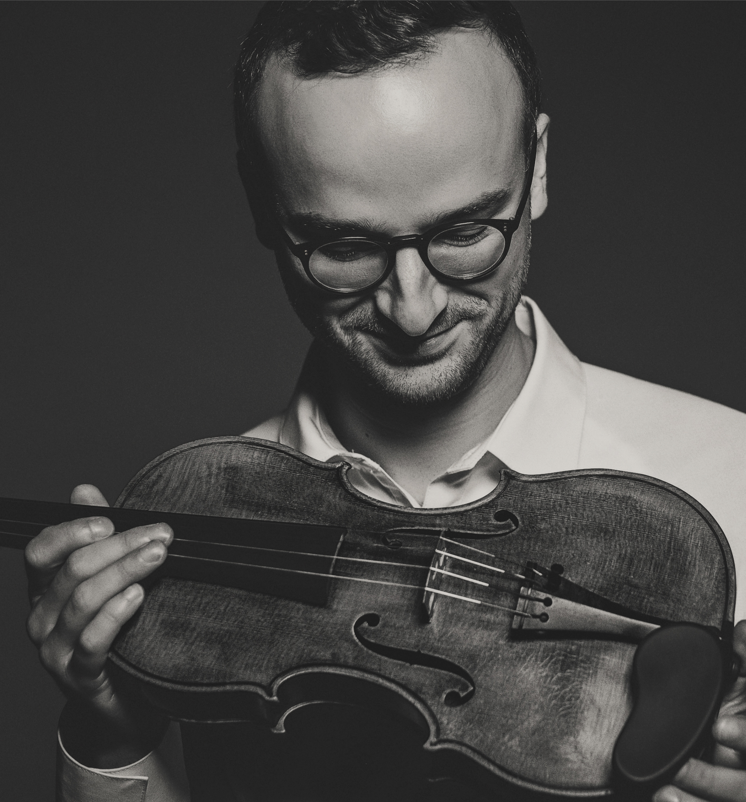
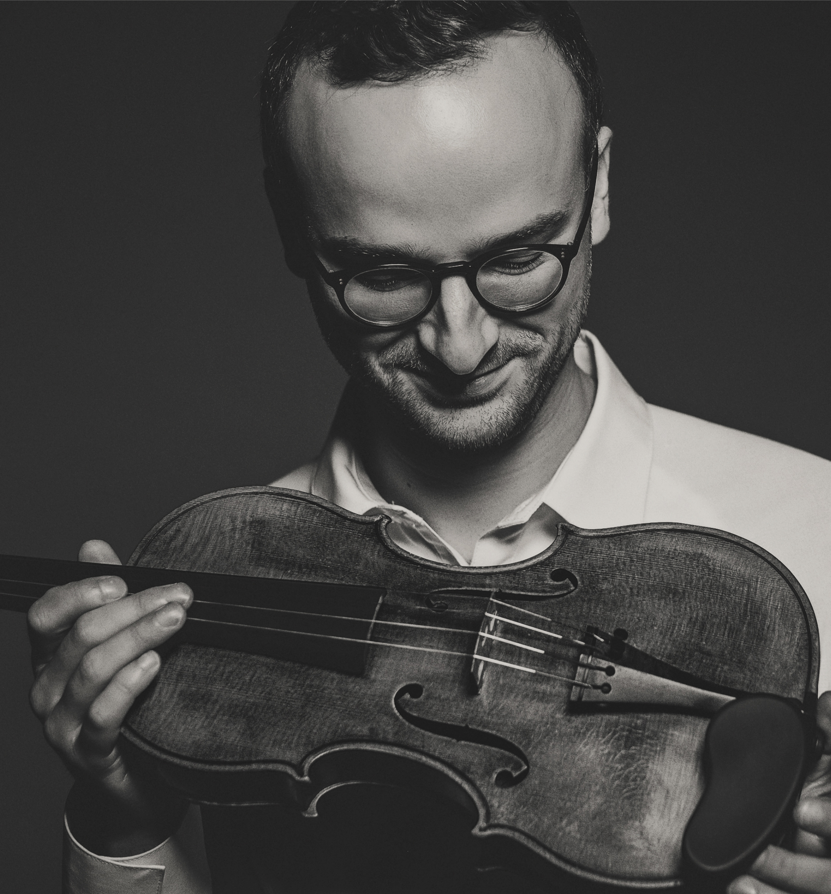

SCROLL TO EXPLORE

Performing with pianist Constantine Finehouse and cellist Daniel Lelchuk
A longstanding musical partnership exploring the violin and piano repertoire with a focus on artistic nuance and historical context
2023 | Haenssler Classics
Pairing a 1706 Guarneri violin (strung with sheep gut) with original 19th-century pianos
2021 | Orchid Classics
World-premiere recordings of the works of Lera Auerbach and Richard Beaudoin as well as masterpieces by Cage and Messiaen
2018 | Spice Classics
Featuring works by Brahms, Prokofiev, Tchaikovsky, Wagner, Rachmaninoff and Schemmer
Brahms B Major Trio Op. 8
Event DetailsMusic of Krein, Achron, Weiser, Prokofiev
Event DetailsProgram Inspired by the Poetry of Robert Frost
Event DetailsCollaboration with Ben Laude and MIT Nanolab
More InfoFeaturing an original Tröndlin piano, ca.1830
Event DetailsMusic of Debussy, Franck, Beach
Event DetailsMusic of Franck, Brahms on an original 1882 Erard piano
Event DetailsS. Rachmaninoff's Trio No. 2
Event Details"Kurganov and Finehouse display uncanny synchronicity...Kurganov employs vibrato judiciously, and on occasion sneaks in just a hint of upward portamento à la Kreisler or Elman when reiterating a motive."
— Jed Distler (2023)"The extremely close recording captures every last sound as bow contacts string or left-hand shifts position… it adds a vivid immediacy to Kurganov's already searing performance."
— The Strad Magazine (2022)A collaborative project blending traditional Japanese music with Western classical forms.
My mission is to empower others to bridge the gap between the fingers and the heart. Standing in the direct lineage of Jascha Heifetz, I see the great tradition of violin playing and incredible artistic nuance achieved in the 20th century as both a science and an art—something to be studied, preserved, and continually reimagined.
Central to my method is the principle that the student is not a container needing to be filled, but rather a lightbulb needing to be turned on. Therefore, I focus first and foremost on teaching students how to think, not what to think.
My own late start on the violin and the setbacks I faced compelled me to dissect each element of technique, artistry, and learning. This background, along with intense study of technique and different styles, allows me to offer students practical 'tools' for their musical 'toolbox,' enhancing their sensitivity to sound and promoting an efficient workflow. My approach alternates between equipping students with these tools and cultivating the understanding that 'feeling is knowing.'
There is nothing more rewarding for me than making a student aware of their gifts and showing them how to nurture them, ultimately empowering them to become self-sufficient artists and rendering my 'job' obsolete."
Join my Patreon community for exclusive educational content, practice guides, personalized feedback and bi-weekly live Q&A sessions.


My e-book offering practical strategies to transform your practice sessions and accelerate your musical growth.

An immersive program designed to accelerate technical and artistic growth through focused study and performance opportunities.

My contributions to The Strad Magazine explore various aspects of violin technique, historical performance practice, and contemporary approaches to classical music.
8 February 2024
Exploring Brahms's Violin Sonata no.2 with a focus on historical performance approach and the quest for authenticity.
14 February 2024
Taking inspiration from the composer's Lieder and highlighting the importance of emulating vocal lines in Brahms's second violin sonata.
24 May 2022
Sharing my musical journey of first picking up the violin as a teenager in an age where starting at three is considered 'normal'.
Specialized workshops worldwide focusing on technical development, musical interpretation, and career guidance for musicians.
Inspiration and experimentation have been crucial to my musical growth. By learning from other musicians and recordings, I have tried to translate fresh ideas into practical solutions in the practice room, resolving challenges and discovering new expressive possibilities.

A forthcoming revolutionary AI Agent that understands centuries of pedagogical wisdom, your unique violin journey, helps teachers and students with scheduling, practice tracking, AI analysis, and provides an ever-growing customizable library of violin study materials.

Overtone Artists is a boutique production company devoted to capturing nuances in sound and picture. Our sister label, Spice Classics, curates a catalog of forgotten masterpieces and supports emerging artists and authentic expression.

Exploring the creative possibilities of AI in classical music composition and performance.

An innovative system to help musicians experience and explore their sound and collaborations from the audience's perspective—in real time.
Violinist Daniel Kurganov, praised for his "extraordinary fervor, commitment, and technical prowess" (Classics Today), has recently given recitals at venues including Merkin Hall and BargeMusic (NYC), the Boston Museum of Fine Arts, The Harvard Musical Association (Boston), The Boston Conservatory, The University of Maryland, The Jewish Institute of Research (NYC), Musikhoschule Münster (Germany) and the Harvard ArtLab (Boston). In Sion, Switzerland, he worked with the Violins of Hope project, performing on an instrument rescued from Auschwitz alongside Maestros Shlomo Mintz and Rudolf Koelman.
Daniel's 2018 debut album with pianist Constantine Finehouse received universal acclaim. In 2021, he recorded world premieres by Lera Auerbach and Richard Beaudoin for Orchid Classics. His 2023 release of the complete Brahms Violin Sonatas on Hänssler Classics features a 1706 Guarneri violin (strung with sheep gut) and an 1868 Streicher "Brahms Piano." This project, which he designed as a collaboration between instrument and string makers, historians, piano and violin collections, was praised by The Strad for "vivid immediacy" and a "searing performance," while Jed Distler awarded it a 10/10 rating. Daniel is also a professional audio and video engineer and producer, runs the Spice Classics classical label and the production company Overtone Artists.
Committed to innovative music education, Daniel founded the Boston Violin Intensive, a 10-day training program. His YouTube channel offers in-depth educational content to over 80,000 subscribers. Daniel's pedagogy is rooted in a spirit of experimentation, intense listening, and deep study of violinists past and present—the same approach that enabled him to progress rapidly on the instrument despite starting at age 16. He conducts workshops and masterclasses worldwide, including recent engagements at the Boston Conservatory, the University of Maryland, and Musikhochschule Münster. His sessions explore a wide range of topics, from approaching fundamental technique through first principles, to leveraging AI for musicians, to understanding the rich string-playing traditions of the late 19th and early 20th centuries. Regularly featured in The Strad magazine, he was voted "Best of The Strad 2021." In 2025, Daniel was a visiting teacher at Boston University, working with graduate/doctoral violin students of Bayla Keyes.
As a former lead team member at Tonebase, Daniel has produced workshops and courses in collaboration with renowned artists such as Pinchas Zukerman, Seymour Bernstein, and Ron Carter. He also directed Tonebase's East Coast operations, violin live-streaming, managed an AI-powered localization campaign, and helped the company become the world's premiere online classical music platform. Daniel is also the founder of ARCO, a forthcoming AI-powered knowledge base for violinists and teachers, enhancing access to centuries of pedagogical wisdom.
Born in Minsk, Belarus, and raised in Chicago, Daniel began playing piano at six, later studying guitar, and finally taking up the violin at sixteen. He completed his Masters studies under Rudolf Koelman, a protégé of Jascha Heifetz, at the Zurich University of the Arts (ZHdK), and is an alumnus of the Keshet Eilon International Mastercourse.
"The duo's fine musicianship was on display throughout, channeling pathos and joy using the full possibilities of their instruments." — The Boston Musical Intelligencer (2021)
For booking inquiries, collaborations, or questions about my educational programs, please don't hesitate to reach out.